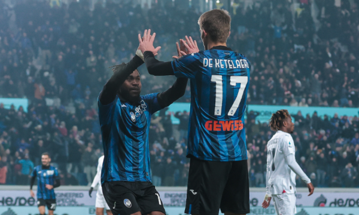

Milani mposhtet në fund nga Atalanta
Pas katër ndeshjeve pa fitore, Atalanta mposhti sonte Milanin për te u rikthyer te fitorja në Serie A. Përballja në “Gewiss Stadium” prodhoi pesë gola, teksa u mbyll me rezultatin 3:2 në të mirë të vendasve. Kjo ndeshje i takoi javës së 15-të në elitën e futbollit italian. Ademola Lookman (38, 55) ishte autor i dy golave të parë për skuadrën nga Bergamo, që fitoren e siguroi në fundin e ndeshjes përmes Luis Muriel (90+5).